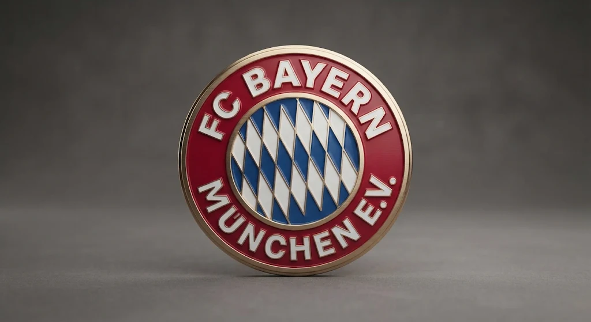
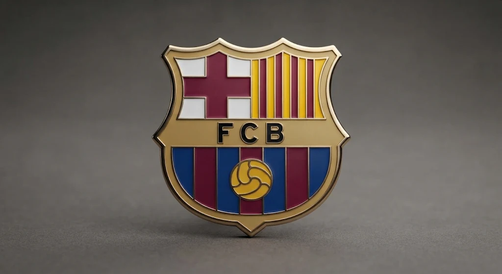
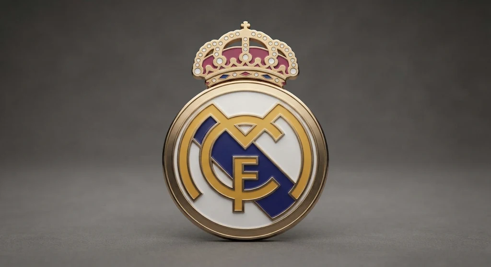
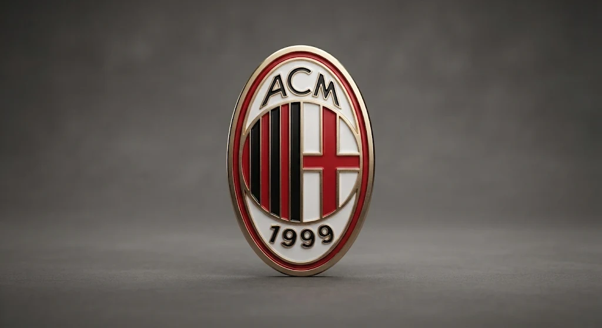
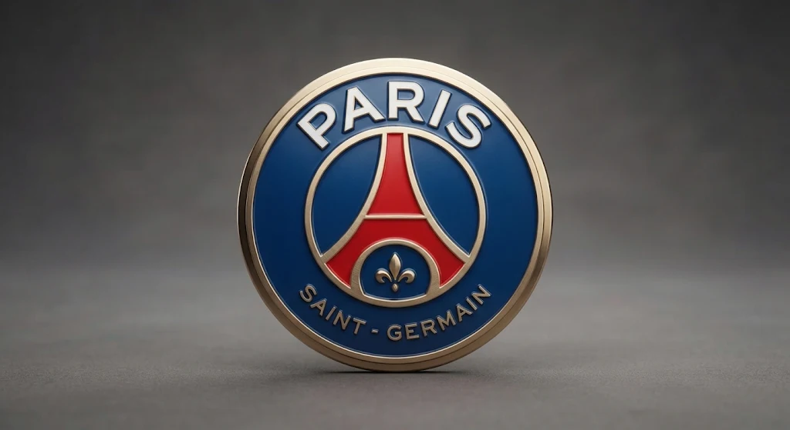
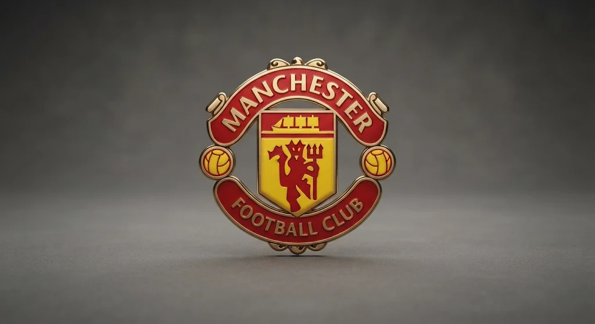

ELS EQUIPS HISTÒRICS
Selecciona un equip fent clic sobre el seu escut per veure'n els detalls.

FC Barcelona

Real Madrid C.F.

A.C. Milan

Paris Saint-Germain

Manchester United F.C.
Equip seleccionat: Cap